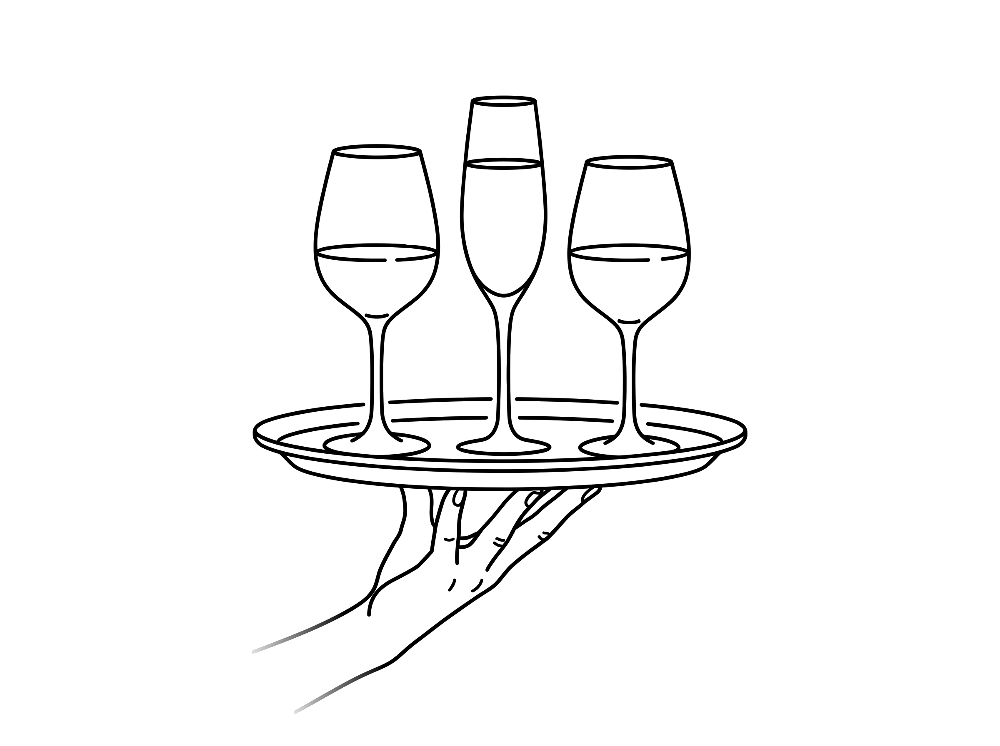

@ de uitkijk

{% set sectie = menu.secties | sectie("Voor bij de koffie") %}{% if sectie %}{{ renderItems(sectie.items) }}{% endif %}
{% set sectie = menu.secties | sectie("Borrelplanken") %}{% if sectie %}{{ renderItems(sectie.items) }}{% endif %}
* Planken uitbreiden? Kijk snel op de achterkant voor extra borrelhapjes!
{% set sectie = menu.secties | sectie("Verse broodjes") %}{% if sectie %}{{ renderItems(sectie.items) }}{% endif %}